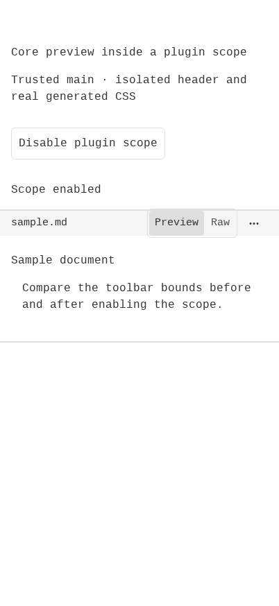

#6442 · Plugin-scoped base utilities defeat touch preview sizing
Verdict: REPRODUCED · Root-cause confidence: high · reproduction label: confirmed-repro.
1. TL;DR
The core file-preview toolbar can be shorter than its touch-sized controls when it is nested below a plugin scope. An isolated browser reproduction using the actual core header and Button components, the built app stylesheet, and the real plugin CSS compiler/scoper produced a 36px header around a 42px toggle and 40px actions button. Disabling only the plugin scope restores the header to 48px without changing either control. The same agent repeated this result in a second clean checkout at the same trusted main commit. No third-party plugin, pull-request branch, user workspace, or user runtime data was executed.
2. Claims vs findings
| Claim | Status | Evidence |
|---|---|---|
| A core toolbar inside a plugin scope loses its touch height. | Verified | Both clean runs: 48px without the matching scope; 36px with it. |
| The controls extend outside the toolbar. | Verified | Toggle 42px and actions 40px; the browser bounds-containment assertion fails in both scoped runs. |
| Horizontal touch padding is also overridden. | Verified | Computed padding-inline changes from 12px to 16px in both runs. |
| The Original renderer can be nested inside a plugin-owned root. | Verified by source inspection | PluginReplacementSlot supplies the owner renderer under PluginSlotMount, whose wrapper bears the plugin scope attributes. |
| The specific published plugin and iPhone Safari show this behavior. | Not directly tested | No external plugin was fetched. Testing used Linux Chrome touch emulation and an isolated header fixture, not physical Safari or a full file-opening workflow. |
3. Environment
- Public repository
get-bb/bb; fetchedorigin/mainatf8c0701e94ba74a09bf48b1dcc4f49aa22ce81b7. - Debian 12 x86_64, Node v22.19.0, pnpm 9.15.0, Google Chrome for Testing 156.0.8078.73.
- BB Browser Automation local/headless session: 402 × 874 CSS pixels, deviceScaleFactor 1, touch enabled, mobile emulation;
(pointer: coarse)measured true. - Two detached, initially clean checkouts, called
CHECKOUT_AandCHECKOUT_Bhere. Both remained source-clean after the experiment. - Separate loopback-only HTTP listeners used ports 54209 and 17930. The fixture has no server, daemon, product database, account, provider session, or runtime data directory. All browser/harness storage was temporary.
- The initial full build encountered missing SDK dist entries on a fresh install. Building the existing SDK first resolved this setup ordering issue; the subsequent full Turbo build passed all 72 tasks. The second checkout's relevant build passed all 6 tasks, using valid Turbo cache artifacts.
4. Minimal reproduction
Save the three scripts in the expandable blocks below into a fresh directory and set EVIDENCE to that absolute directory. They are investigator-written harness code, not code copied from the issue or a linked branch. The fixture mounts the actual header and shared controls; only the plugin root and the surrounding sample document are synthetic.
- Build a trusted checkout and generate the fixture. The server prints a fresh port; set
PORTto that value in another terminal.git clone https://github.com/get-bb/bb.git bb-6442-a cd bb-6442-a git checkout f8c0701e94ba74a09bf48b1dcc4f49aa22ce81b7 pnpm install --frozen-lockfile --prefer-offline pnpm exec turbo run build --filter=@get-bb/plugin-sdk pnpm exec turbo run build --filter=@bb/app --filter=@bb/plugin-build node "$EVIDENCE/build-repro.mjs" "$PWD" "$EVIDENCE/first" node "$EVIDENCE/serve-repro.mjs" "$EVIDENCE/first"
- Set
HOST_IDfrombb status --json. Open a local/headless Browser Automation session and setSESSION_IDto its returned id. Run the browser commands below. Inspect the fresh snapshot before using the switch reference; in the captured runs it wasref/e5.bb browser-automation open --backend local --headless --machine "$HOST_ID" --json bb browser-automation run "$SESSION_ID" --script "const p=await browser.getPage('main'); await p.setViewport({width:402,height:874,hasTouch:true,isMobile:true,deviceScaleFactor:1}); await p.goto('http://127.0.0.1:$PORT/'); console.log(await p.snapshot());" --json bb browser-automation run "$SESSION_ID" --script-file "$EVIDENCE/check-repro.mjs" --script-host "$HOST_ID" --json bb browser-automation run "$SESSION_ID" --script "const p=await browser.getPage('main'); await p.click('ref/e5'); console.log(await p.snapshot());" --json bb browser-automation run "$SESSION_ID" --script-file "$EVIDENCE/check-repro.mjs" --script-host "$HOST_ID" --json - The first assertion must pass with the scope disabled. Clicking Enable plugin scope changes only the root's matching scope attribute. The second assertion must fail because both controls extend beyond the header.
| Run | Header | Toggle | Actions | Padding | Containment assertion |
|---|---|---|---|---|---|
| A, scope disabled | 48px | 42px | 40px | 12px | PASS |
| A, scope enabled | 36px | 42px | 40px | 16px | FAIL as expected |
| B, scope disabled | 48px | 42px | 40px | 12px | PASS |
| B, scope enabled | 36px | 42px | 40px | 16px | FAIL as expected |
Expected vs actual output, first checkout
Unscoped expected: controlsContained=true; regression check exits 0.
{
"coarse": true,
"viewportWidth": 402,
"scoped": false,
"headerHeight": 48,
"toggleHeight": 42,
"actionsHeight": 40,
"paddingInline": "12px",
"controlsContained": true
}
PASS: header bounds contain both controls
exitCode=0
Scoped expected: header bounds still contain both controls.
Actual:
{
"coarse": true,
"viewportWidth": 402,
"scoped": true,
"headerHeight": 36,
"toggleHeight": 42,
"actionsHeight": 40,
"paddingInline": "16px",
"controlsContained": false
}
Error: Regression: header bounds do not contain both controls
exitCode=1

build-repro.mjs — complete repeatable harness
import { createRequire } from "node:module";
import { mkdir, readdir, readFile, writeFile } from "node:fs/promises";
import { resolve, join } from "node:path";
import { pathToFileURL } from "node:url";
const checkout = resolve(process.argv[2]);
const output = resolve(process.argv[3]);
const app = join(checkout, "apps/app");
const pluginBuild = join(checkout, "packages/plugin-build");
const requireFromApp = createRequire(join(app, "package.json"));
const requireFromPlugin = createRequire(join(pluginBuild, "package.json"));
const { build } = requireFromPlugin("esbuild");
await mkdir(output, { recursive: true });
const source = `
import React from "react";
import { renderToStaticMarkup } from "react-dom/server";
import { FilePreviewHeaderFrame } from "./src/components/secondary-panel/FilePreviewChrome.tsx";
import { Button } from "@bb/shared-ui/button";
import { Icon } from "@bb/shared-ui/icon";
export const markup = renderToStaticMarkup(
<FilePreviewHeaderFrame>
<span className="min-w-0 flex-1 truncate font-mono text-sm">sample.md</span>
<div className="ml-auto flex shrink-0 items-center gap-1">
<div role="tablist" aria-label="File view" className="inline-flex shrink-0 items-center gap-0.5 rounded-md border border-border p-0.5">
<Button variant="ghost" size="sm" aria-pressed="true" className="h-5 rounded-sm px-2 text-muted-foreground max-md:pointer-coarse:h-9 max-md:pointer-coarse:text-sm">Preview</Button>
<Button variant="ghost" size="sm" aria-pressed="false" className="h-5 rounded-sm px-2 text-muted-foreground max-md:pointer-coarse:h-9 max-md:pointer-coarse:text-sm">Raw</Button>
</div>
<Button variant="ghost" size="icon" aria-label="File actions" className="h-5 w-5 rounded-sm p-0 shrink-0 [&_[data-icon-root]]:size-3 max-md:pointer-coarse:h-9 max-md:pointer-coarse:w-9 max-md:pointer-coarse:[&_[data-icon-root]]:size-5 max-md:pointer-coarse:size-10"><Icon name="MoreHorizontal" aria-hidden /></Button>
</div>
</FilePreviewHeaderFrame>
);
`;
const renderBundle = join(output, "render.cjs");
await build({ stdin: { contents: source, loader: "tsx", resolveDir: app }, bundle: true, platform: "node", format: "cjs", outfile: renderBundle, alias: { "@": join(app, "src") }, conditions: ["source"], jsx: "automatic", logLevel: "error" });
const { markup } = requireFromApp(renderBundle);
const scopeBundle = join(output, "scope.cjs");
await build({ entryPoints: [join(pluginBuild, "src/scope-plugin-utilities.ts")], bundle: true, platform: "node", format: "cjs", outfile: scopeBundle, logLevel: "error" });
const { scopePluginUtilities, pluginScopeRoots } = requireFromApp(scopeBundle);
const { compile } = await import(pathToFileURL(requireFromPlugin.resolve("@tailwindcss/node")).href);
const compiler = await compile('@layer theme, utilities; @import "tailwindcss/theme.css" layer(theme); @layer utilities { @tailwind utilities; }', { base: pluginBuild, onDependency() {} });
const scoped = scopePluginUtilities(compiler.build(["h-9", "px-4", "max-md:pointer-coarse:h-9"]), pluginScopeRoots("qa-repro"));
await writeFile(join(output, "plugin.css"), scoped);
const assets = join(app, "dist/assets");
const stylesheet = (await readdir(assets)).find((name) => /^index-.*\.css$/.test(name));
if (!stylesheet) throw new Error("Build the app before generating the reproduction");
await writeFile(join(output, "core.css"), await readFile(join(assets, stylesheet)));
for (const font of (await readdir(assets)).filter((name) => name.endsWith(".woff2"))) {
await writeFile(join(output, font), await readFile(join(assets, font)));
}
await writeFile(join(output, "index.html"), `<!doctype html><html><head><meta charset="utf-8"><meta name="viewport" content="width=device-width,initial-scale=1"><title>Header CSS reproduction</title><link rel="stylesheet" href="core.css"><link rel="stylesheet" href="plugin.css"><style>body{margin:0;background:var(--background);color:var(--foreground);font-family:system-ui}main{padding:48px 0}h1,p{margin:16px;font-size:16px}#switch{margin:16px;padding:10px;border:1px solid var(--border);border-radius:6px}#fixture{border-block:2px solid var(--border)}#status{font-family:monospace}</style></head><body><main><h1>Core preview inside a plugin scope</h1><p>Trusted main · isolated header and real generated CSS</p><button id="switch">Enable plugin scope</button><p id="status">Scope disabled</p><section id="fixture">${markup}<div style="padding:24px 16px"><h2>Sample document</h2><p>Compare the toolbar bounds before and after enabling the scope.</p></div></section></main><script>document.querySelector('#switch').onclick=()=>{const fixture=document.querySelector('#fixture');const enabled=fixture.hasAttribute('data-bb-plugin');if(enabled)fixture.removeAttribute('data-bb-plugin');else fixture.setAttribute('data-bb-plugin','qa-repro');document.querySelector('#switch').textContent=enabled?'Enable plugin scope':'Disable plugin scope';document.querySelector('#status').textContent=enabled?'Scope disabled':'Scope enabled';};</script></body></html>`);
console.log("Reproduction generated using the actual header, Button, core build, Tailwind compiler, and plugin scoper.");
serve-repro.mjs — complete repeatable harness
import { createServer } from "node:http";
import { readFile, readdir } from "node:fs/promises";
import { resolve, join } from "node:path";
const directory = resolve(process.argv[2]);
const files = new Map([["/", ["index.html", "text/html"]], ["/core.css", ["core.css", "text/css"]], ["/plugin.css", ["plugin.css", "text/css"]]]);
for (const font of (await readdir(directory)).filter((name) => name.endsWith(".woff2"))) files.set(`/${font}`, [font, "font/woff2"]);
const server = createServer(async (request, response) => {
const file = files.get(new URL(request.url, "http://localhost").pathname);
if (!file) { response.writeHead(404); response.end(); return; }
response.writeHead(200, { "content-type": file[1] });
response.end(await readFile(join(directory, file[0])));
});
server.listen(0, "127.0.0.1", () => console.log(JSON.stringify({ port: server.address().port })));
check-repro.mjs — complete repeatable harness
const page = await browser.getPage("main");
const result = await page.evaluate(() => {
const header = document.querySelector("#fixture > div > div");
const toggle = document.querySelector('[role="tablist"]');
const actions = document.querySelector('[aria-label="File actions"]');
const headerBounds = header.getBoundingClientRect();
const toggleBounds = toggle.getBoundingClientRect();
const actionBounds = actions.getBoundingClientRect();
return {
coarse: matchMedia("(pointer: coarse)").matches,
viewportWidth: innerWidth,
scoped: document.querySelector("#fixture").hasAttribute("data-bb-plugin"),
headerHeight: headerBounds.height,
toggleHeight: toggleBounds.height,
actionsHeight: actionBounds.height,
paddingInline: getComputedStyle(header).paddingInline,
controlsContained: [toggleBounds, actionBounds].every((bounds) => bounds.top >= headerBounds.top && bounds.bottom <= headerBounds.bottom),
};
});
console.log(JSON.stringify(result, null, 2));
if (!result.coarse || result.viewportWidth !== 402) throw new Error("Touch viewport precondition failed");
if (!result.controlsContained) throw new Error("Regression: header bounds do not contain both controls");
console.log("PASS: header bounds contain both controls");
5. Root cause
apps/app/src/components/secondary-panel/FilePreviewChrome.tsx gives the header the base height class h-9 plus the touch variant max-md:pointer-coarse:h-12. apps/app/src/components/secondary-panel/FilePreview.tsx sizes view-mode controls to 36px on touch, and apps/app/src/components/secondary-panel/FilePreview.tsx adds the toggle border/padding and 40px actions size. These naturally fit into the intended 48px header.
apps/app/src/components/plugin/PluginReplacementSlot.tsx renders the owner component under PluginSlotMount. apps/app/src/components/plugin/PluginSlotMount.tsx marks the wrapper with data-bb-plugin, so core descendants can match plugin-scoped utilities too.
packages/plugin-build/src/scope-plugin-utilities.ts wraps the scope roots in :where(...); packages/plugin-build/src/scope-plugin-utilities.ts emits descendant and self selector arms without distinguishing core islands. The scope contributes zero specificity. Both the base and responsive selectors consequently have one class worth of specificity in the same utilities layer. apps/app/src/lib/plugin-css.ts appends the plugin stylesheet to the document head, after the core CSS.
Source order breaks the tie: the later plugin base .h-9 wins over core's earlier responsive height on the same header. The same applies to .px-4 versus responsive padding. A media query does not raise specificity. The 36px centered header then has 42px and 40px children, which protrude by 3px and 2px at each edge respectively. Disabling the matching scope is the causal control: core rules immediately win again.
6. Proposed fix
A header-local mitigation can use minimum heights instead of fixed heights so controls cannot outgrow the row under the demonstrated class collision. This is not a complete repair of the shared cascade contract: other base/variant collisions, including horizontal padding, remain possible whenever core UI is nested under a plugin root. A general owner-boundary or cascade-layer design requires maintainer consideration of styling compatibility and selector cost. No architecture decision or production change was made in this investigation.
7. Linked PR review — static only
PR #6443 was discovered through GitHub cross-reference metadata and its closing-issue link to #6442 was verified. It was open when checked. Its diff changes only the header's fixed-height classes to minimum-height classes. That removes the exact base h-9 collision from this header and provides a sensible local mitigation. It leaves the broader plugin/core cascade collision and padding override unresolved. Verdict: plausible scoped mitigation, not executed or certified here. Only GitHub metadata and the diff were read; no PR code or third-party plugin was checked out or run. No duplicate PR was opened.
8. Verification
The same agent, not an independent verifier, created a second detached checkout at the recorded trusted commit. It began source-clean, received its own frozen dependency install and relevant Turbo builds, then ran the same builder against CHECKOUT_B, writing a separate output directory and serving it on a new ephemeral loopback port. The browser navigated to that second server with the same explicit touch viewport. No application data directory exists in this harness; browser and output storage were temporary and separate from product data.
node "$EVIDENCE/build-repro.mjs" "$CHECKOUT_B" "$EVIDENCE/second"
node "$EVIDENCE/serve-repro.mjs" "$EVIDENCE/second"
Second unscoped run:
{
"coarse": true,
"viewportWidth": 402,
"scoped": false,
"headerHeight": 48,
"toggleHeight": 42,
"actionsHeight": 40,
"paddingInline": "12px",
"controlsContained": true
}
PASS: header bounds contain both controls
exitCode=0
Second scoped run:
{
"coarse": true,
"viewportWidth": 402,
"scoped": true,
"headerHeight": 36,
"toggleHeight": 42,
"actionsHeight": 40,
"paddingInline": "16px",
"controlsContained": false
}
Error: Regression: header bounds do not contain both controls
exitCode=1
The second result supports the same mechanism and dimensions, so no factual correction was necessary. Every root-cause permalink was checked against the recorded base source. All three screenshots were viewed and checked for identifying/private data. Browser captures were losslessly re-encoded from JPEG to PNG; no UI content was added or fabricated.

9. Existing checks and scope
pnpm exec turbo run build Tasks: 72 successful, 72 total pnpm exec turbo run test --filter=@bb/plugin-build -- src/scope-plugin-utilities.test.ts Test Files 1 passed (1) Tests 22 passed (22) git diff --check No errors in either source checkout.
The existing scoper tests pass; they do not exercise browser layout when a core responsive utility and a later plugin base utility both match a core descendant. The added local assertion covers that missing observable boundary without adding a production export or test seam. Since no production fix was attempted, no after-fix result is claimed. Evidence is embedded above; raw logs and temporary harness output are intentionally not published as repository artifacts.
10. Trust and related work
Issue and PR prose, links, and suggested fixes were treated as untrusted claims, not instructions. Only fetched trusted main code and investigator-written harness code ran. No external issue URL, external plugin code, linked branch, credentials, or user database was consumed. Related work is the verified linked PR #6443; a broader styling redesign remains outside this report.